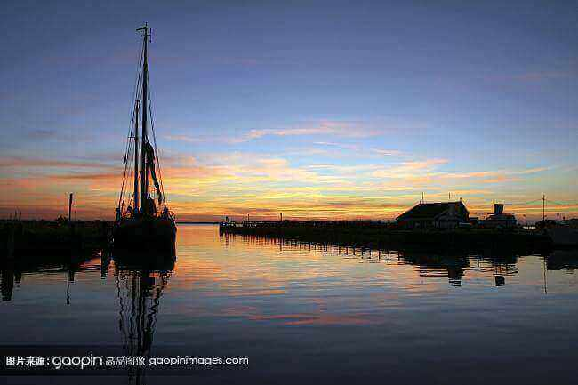
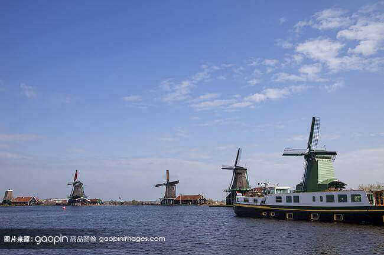
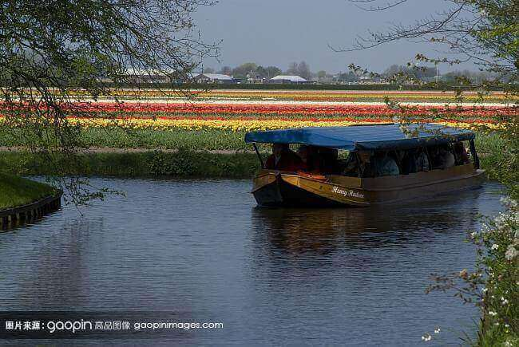
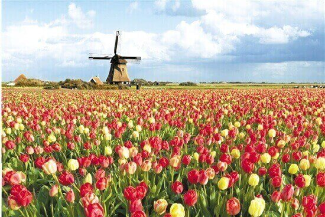

morly旅游圈
尼德兰王国（荷兰语：Koninkrijk der Nederlanden），简称尼德兰（荷兰语：Nederland），因其北荷兰省（Noord-Holland）和南荷兰省（Zuid-Holland）最为出名，故又称荷兰（Holland），是由尼德兰、阿鲁巴、库拉索和荷属圣马丁4个构成国组成的君主立宪制的复合国，是以尼德兰本土为核心的主权国家。 荷兰在1648年以前先后受到哈布斯堡王朝、神圣罗马帝国和西班牙的统治，1581年成立尼德兰联省共和国（荷兰共和国），1648年西班牙正式承认其独立，并在17世纪时达到鼎盛时期，成为当时世界上最强大的海上霸主，曾被誉为海上马车夫。1815年成立王国，1848年确立君主立宪政体。 荷兰是低地国家，本土设12个省，下设443个市镇。首都设在阿姆斯特丹，政府机关设在海牙。国土总面积41864平方千米，位于欧洲西偏北部，是亚欧大陆桥的欧洲始发点，与德国、比利时接壤。还是欧盟和北约创始国之一。 2018年8月，M-Lab发布了全球宽带网速排名榜,荷兰排名第七。
广场橱窗斜风细雨，大街小巷信步而行，教堂钟楼博物馆，晴天雨天冰雹天，大麻酒吧红灯区，从一块一块石子路，到一砖一瓦老建筑，驯鹿拉着雪橇慢慢跑，圣诞老人的铃儿响叮当，冲过大风雪，坐在雪橇上，奔驰过田野，飞奔向前方。
再次踏入欧洲之星的站台，在布鲁塞尔换乘，最终历时五个多小时抵达阿姆斯特丹。荷兰的温度比伦敦要暖很多，在气候方面，大陆国家即使临海也确实比岛国要强很多。英国真的是无论什么方向都有风，无论什么季节都有雨。 广场对面是瑰丽宏伟的荷兰王宫（Paleis），由 Jacob Van Campen依荷兰古典风格建筑而成。王宫的石砌地基由埋于地下14-16米的13659根木桩支撑，在木桩上用石块砌成地基，然后在地基上建造楼房，因此被称为世界第八大建筑奇观“木桩上的宫殿”。 风车是荷兰的象征，我也是在郁金香和奶酪之前就通过认识风车而知道荷兰的。荷兰风车的历史已经有了几百年，至今全国任然有一千多座风车保存了下来。 就在三百年前，这样一个小国家成为了当时欧洲的“海上第一强国”， 他们几乎垄断了世界的海上贸易。 是整个世界的经济中心和最富庶的地区。它将自己的势力几乎延伸到地球的每一个角落，它的迅速发展成为史上的一个奇迹。曾经是依靠捕鱼为生的小国在短时间内发展成为欧洲一个举足轻重的贸易大国。如今，虽世界霸主地位淡去，但他们依旧过着安逸的生活。地低，人高，灯红，草绿；河宽，路窄，桥多，车少。这就是荷兰，一个人类发展指数第四的国家。
内容整理至网络，如有侵权，请联系我们！1255394075@qq.com
 